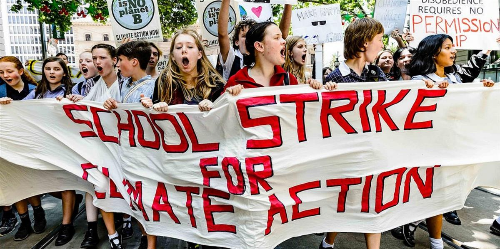

We are school students aged 8-18 from cities and towns across New Zealand. Most of us have never met before but are united by our concern about our planet.
We are striking from school to tell our politicians to take our futures seriously and treat climate change for what it is - a crisis.
Politicians can show us that they care by taking urgent action to move New Zealand beyond fossil fuels and get the job done of moving us to 100% renewable energy for all.
Climate change is one of the biggest problems facing the world and it isn’t being addressed quickly enough.
In New Zealand, education is viewed as immensely important, and a key way to make a difference in the world.
But simply going to school isn’t doing anything about climate change.
And it doesn’t seem that our politicians are doing anything, or at least not enough, about climate change either. If this is 'our generation's Nuclear Free moment' it's time to start acting like it!
So, as our contribution to the changes we want to see, we are striking from school. We are temporarily sacrificing our educations in order to save our futures.
Our Network is
Student led
Decentralised
Grassroots
Non-partisan
Inclusive
Non-violent
Focused
